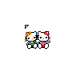
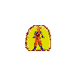
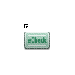
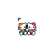
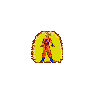
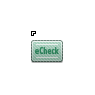

 YAQ-ILECT// RAISIN BRAIN ---- GLOSSARY
YAQ-ILECT// RAISIN BRAIN ---- GLOSSARY
1. mindfield
`experience`
2. mindfilter
`idea, person or thing that is able to alter experience in a significant way`
3. meats
`people`
4. bubu
`loved one`
5. LOU
`lol or haha`
6. haha lolery
`bad thing`
`Meat A: that meat really haha loled me`
`Meat B: that’s unfortunate, how did they haha lol?`
7. raisin brain
`stupid`
`i am so raisin brain`
8. slock
`to kiss`
`i hear they are slocking`
9. slock buddy
`S/O`
10. ape
`to be horny`
`to engage in sexual intercourse`
`ben shapiros eyebrows make me ape`
`are you going to ape that tinder meat?`
11. floor fall
`to feel hurt`
`bro senpai said some stuff that really made me fall on the floor today `
12. shordilicious
`sexy`
`hot`
`zoo wee mama, that meat is so shordilicious`
13. portal
`place that feels otherworldly`
`person that makes makes mindfield go crazy and weird and wonderful`
`farm boy hill is my favourite portal`
`you are a portal person`
`i love portal people`
14. heart bounce
`heart bouncer - crush`
`to feel love for someone`
`hehe bubu you bounce in my heart`
`have you spoken to your heart bouncer?`
15. raisin language
`official name of the yaq dialect`
`those meats bully me for speaking raisin`
16. hunky chunky munky
`this one is up to ur interpretation`
17. symbiosis
`when you have a reciprocal + good relationship w/ a meat`